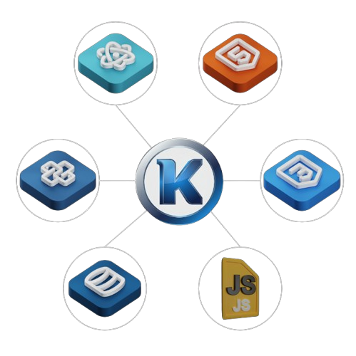
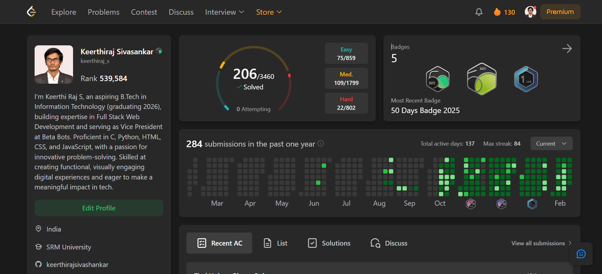
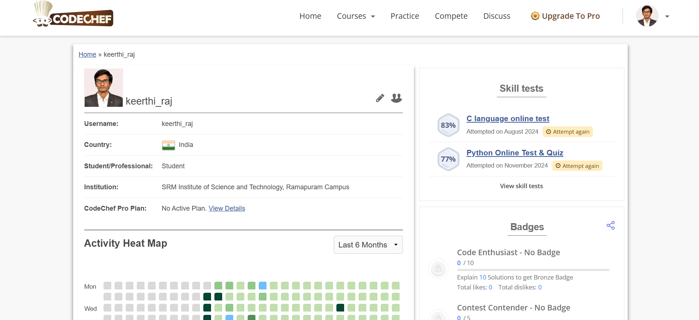
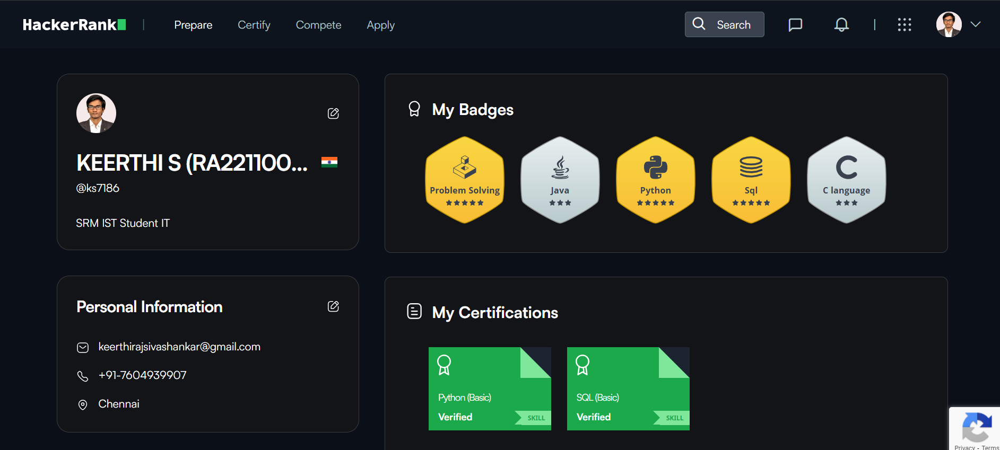
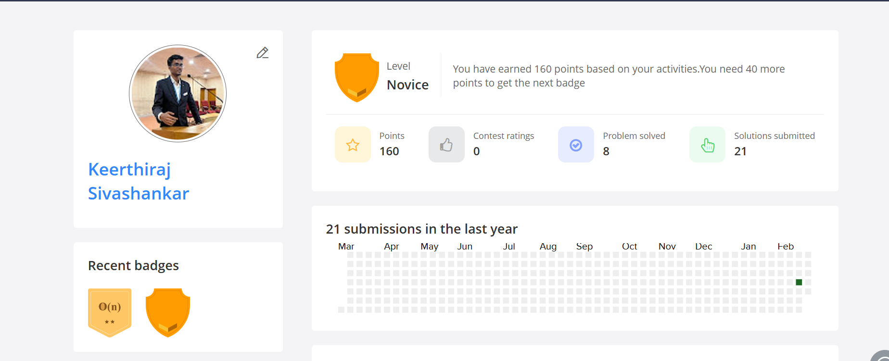

SKRcodes
Providing the best Project Experience
I'm a aspiring Full-stack Web Developer with Experience in developing Websites , DSA and DAA . Check out my skills.
Hello , There 👋
Hi there, I'm Keerthi Raj
Passionate Full Stack Web Developer skilled in React, Next.js, Django, and MySQL,Always eager to learn, innovate, and solve complex problems.

Tech Stack
specializing in the several frameworks,languages and tools that allow me to build scalable applications

I'm very flexible with time zone communications & locations
I'm from India and open to remote work worldwide
My Passion for Coding
With 2 Years of experience , I have honed my skills in both frontend and backend dev , creating dynamic and responsive websites .

2+
Years of Experience
6+
Technical Skills
8+
Projects
25+
Certifications
My Skills 💪

Designer
I'm a Designer, crafting sleek and interactive web interfaces with HTML, CSS, and JavaScript. I also use Canva Magic to create stunning visuals effortlessly!. My strenght lies in blending asthetics with functionality to create seamless user experience.
Coder
I'm a Code Ninja, building seamless and efficient web apps with Python, Django, and JavaScript. I also have experience with database management system using MongoDB and MySQL. I write Logic Magic, turning ideas into reality with clean and optimized code!
My Projects 👨🏽💻
DATALYSIS
The Data Analysis project focuses on visualizing and analyzing data through interactive charts and graphs, using HTML, CSS, and JavaScript to handle and display datasets like CSV files.
Fake ID Detection using RFA
A web-based application that detects fraudulent IDs using a hybrid approach combining Rule-Based Filtering and Machine Learning (Random Forest).
DRIVEASSIT
The Drive Assist project is a centralized system designed for efficient trip planning, FastTag management, and several other useful features for drivers.
Resource Management System
The DBMS project is a resource management system for department resources, developed using HTML, CSS, JavaScript, and Bootstrap for the frontend.
Fraudulent Transaction Detection by IFA
The Fraudulent Transaction Detection System uses Isolation Forest and Rule-Based Filtering to detect suspicious transactions and ensure real-time fraud detection with Flask and Machine Learning.
Experience
🚀 Web Development Virtual Intern
TehnoHacks
October 2023 - November 2023
Worked on frontend UI, various projects , learned about API.
🎨 Designer
BetaBots
2023 - 2024
Designed promotional materials, UI concepts, and event branding.
💻 Lab Assistant (STEM Lab)
SLN Schools
June - July 2024
Assisted students with troubleshooting, system maintenance, and guidance.
🛠️ Vice President - Technical Club
BetaBots
2024 - Present
Led technical initiatives, organized workshops, and mentored junior members.
My Coding Platforms 🚀



